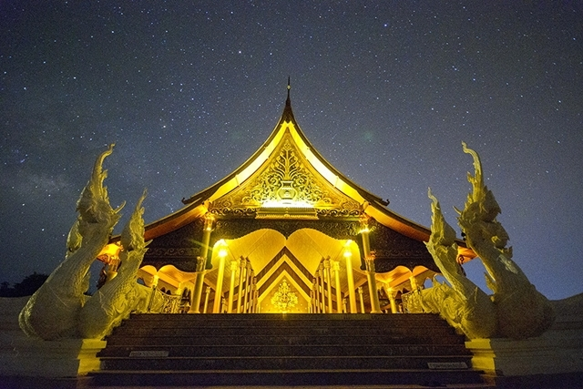
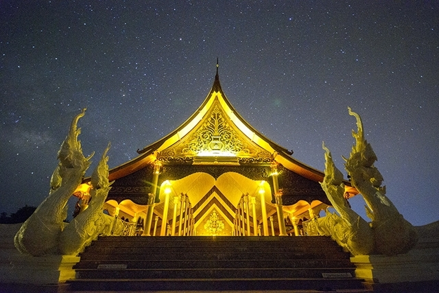

วัดสิรินธรวรารามภูพร้าว
ยินดีต้อนรับสู่ “วัดเรืองแสงแห่งอีสาน”
ที่วัดสิรินธรวรารามภูพร้าว คุณจะได้สัมผัสทั้งความสงบของธรรมชาติ วิวเขาและแม่น้ำ และประสบการณ์ดื่มด่ำกับศิลปะเรืองแสงที่น่าหลงใหล ต้นกัลปพฤกษ์เรืองแสงสีเขียวที่ส่องประกายใต้แสงดาว ยามค่ำคืน... เชิญมาชมสัมผัสความงดงามที่หาไม่ได้จากที่ไหน
ไม่ว่าจะมากราบสักการะ ขอพร สังสรรค์กับธรรมชาติ หรือมาค้นหาความสงบใจ ที่นี่คือจุดหมายที่คุณไม่ควรพลาด
ประวัติโดยย่อของ วัดสิรินธรวรารามภูพร้าว
วัดสิรินธรวรารามภูพร้าว (หรือเรียกสั้น ๆ ว่า “วัดภูพร้าว” / “วัดเรืองแสง”) ตั้งอยู่บนเนินเขาในตำบลช่องเม็ก อำเภอสิรินธร จังหวัดอุบลราชธานี เป็นวัดราษฎร์ สังกัดคณะสงฆ์ฝ่ายธรรมยุติกนิกายอุโบสถวัดมีเอกลักษณ์โดดเด่น สร้างด้วยแรงบันดาลใจจากสถาปัตยกรรมคล้ายวัดจากประเทศลาว เน้นลวดลายประณีตและองค์ประกอบศิลป์ที่สวยงาม
ไฮไลต์ที่ทำให้วัดแห่งนี้เป็นที่รู้จักคือ “ต้นกัลปพฤกษ์เรืองแสง” ประติมากรรมจิตรกรรมเรืองแสงสีเขียว ที่ติดไว้ด้านหลังอุโบสถ โดยเมื่อตอนกลางคืน ภาพจะเรืองแสงอย่างสวยงาม เป็นปรากฏการณ์ที่หาชมได้ยาก มอบบรรยากาศชวนตื่นตาและสงบในเวลาเดียวกัน
วัดเปิดให้เข้าชมทุกวัน เวลา 06:00–21:00 น. และไม่มีค่าเข้าชม เหมาะทั้งสำหรับผู้ที่แวะมาไหว้พระ ขอพร และนักท่องเที่ยวที่ต้องการชมความงดงามทางธรรมชาติและศิลปะในบรรยากาศพิเศษ